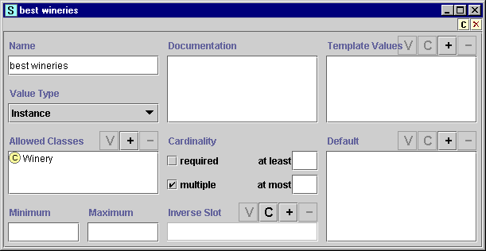

Note: Before you create and use metaslots (slot metaclasses), you should be confident with the basic Protégé interface and be comfortable designing a project, and creating and modifying classes, slots, forms and instances.
Creating a metaslot is almost identical to creating a metaclass. You simply have to make sure the class is created subordinate to :SLOT. Every metaslot is subordinate to :SLOT. By default, every class subordinate to :SLOT is a metaslot, unless you change it. Frequently, it is desirable to create a metaslot subordinate to :STANDARD-SLOT, so that the slot created using the metaslot will have the various properties defined by :STANDARD-SLOT.
To create a new metaslot:
For example, click the C(reate)  template slots button at the right of the Template Slots pane to create a new
slot. This slot will show up as an instance widget for any slot you create
using the metaslot.
template slots button at the right of the Template Slots pane to create a new
slot. This slot will show up as an instance widget for any slot you create
using the metaslot.
